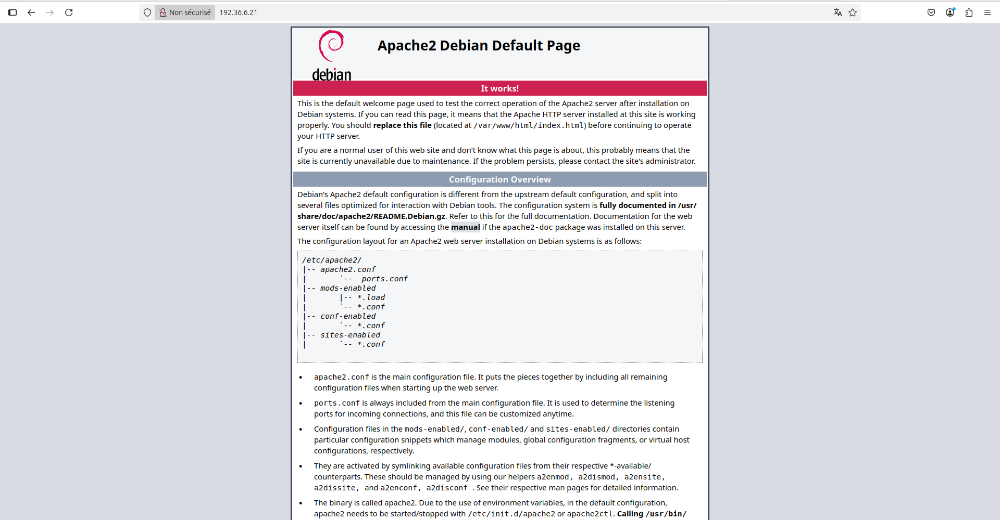
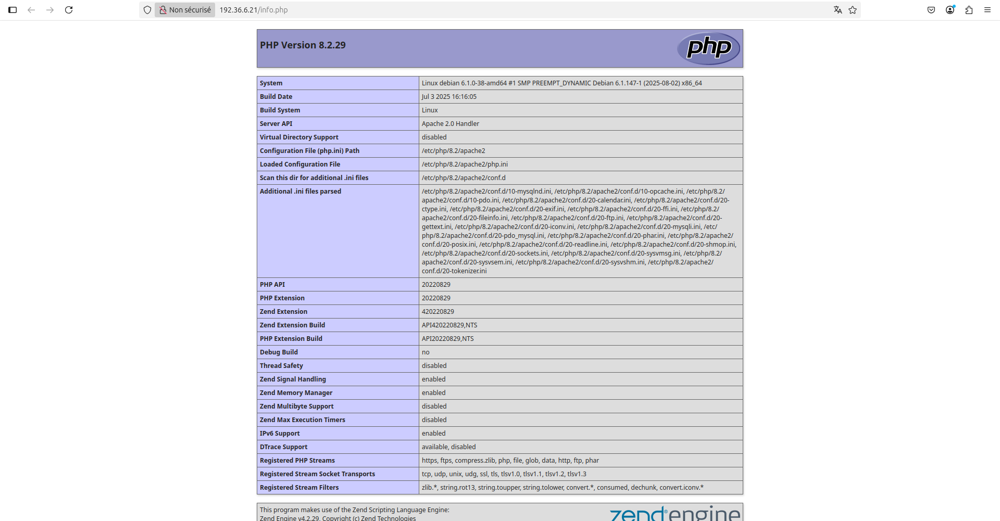
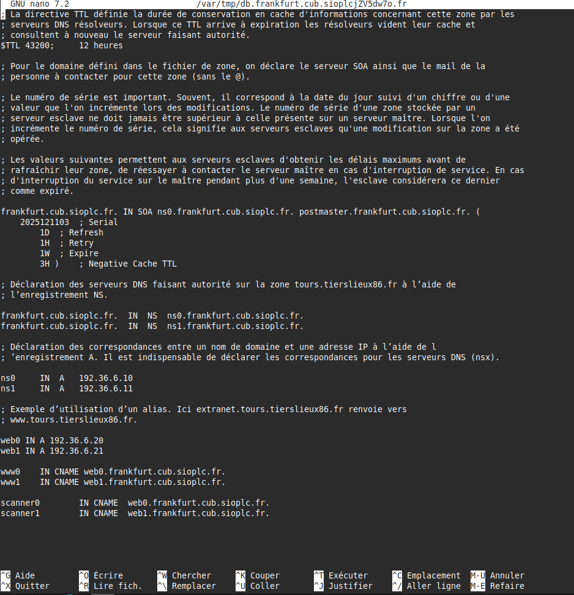
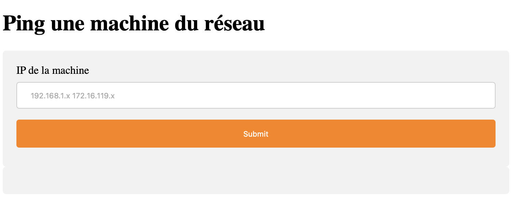

Situation 2 – Administration des services – CUB¶
Mise en place d’un service Web au sein d’une agence de l’entreprise CUB¶
Présenté par : Joris Texier
Date de rédaction : 13 novembre 2025
Version : 1
Sommaire¶
- Serveur LAMP sous Debian 12
- Préparation du système
- Installation d’Apache
- Installation de MariaDB
- Installation de PHP
- Mise en place des hôtes virtuels Apache (VirtualHost)
- Installation et configuration de WordPress
- Configuration DNS
- Récupération d’un site depuis un dépôt Git
- Sécurisation de l’accès au site scanner1
Serveur LAMP sous Debian 12¶
Préparation du système¶
Mettre à jour le système¶
sudo apt update && sudo apt upgrade -y
Installer les paquets requis¶
sudo apt install wget curl -y
Installation d’Apache¶
Installer Apache¶
sudo apt install apache2 -y
Démarrer et activer Apache¶
sudo systemctl start apache2
sudo systemctl enable apache2
Vérifier le statut d’Apache¶
sudo systemctl status apache2
Tester Apache¶
Accéder à l’adresse suivante depuis un navigateur :
http://votre_adresse_ip
Dans ce cas :
http://192.36.6.21

Installation de MariaDB¶
Installer MariaDB¶
sudo apt install mariadb-server -y
Démarrer et sécuriser MariaDB¶
sudo systemctl start mariadb
sudo mysql_secure_installation
Choisir y pour toutes les options proposées.
Accéder à MariaDB¶
sudo mysql -u root -p
Installation de PHP¶
Installer PHP et les extensions nécessaires¶
sudo apt install php php-mysql libapache2-mod-php php-cli php-curl php-gd php-zip -y
Vérifier l’installation de PHP¶
echo "<?php phpinfo(); ?>" | sudo tee /var/www/html/info.php
Accéder à :
http://192.36.6.21/info.php

Supprimer le fichier de test¶
sudo rm /var/www/html/info.php
Mise en place des hôtes virtuels Apache (VirtualHost)¶
Objectif¶
- Site WordPress :
www1.frankfurt.cub.sioplc.fr - Site scanner réseau sécurisé :
scanner1.frankfurt.cub.sioplc.fr
Création des dossiers¶
sudo mkdir -p /var/www/www1
sudo mkdir -p /var/www/html/scanner1
sudo chown -R www-data:www-data /var/www/www1
sudo chown -R www-data:www-data /var/www/html/scanner1
VirtualHost www1¶
<VirtualHost *:80>
ServerName www1.frankfurt.cub.sioplc.fr
DocumentRoot /var/www/www1/wordpress
<Directory /var/www/www1/wordpress>
Options FollowSymLinks
AllowOverride All
Require all granted
</Directory>
ErrorLog ${APACHE_LOG_DIR}/www1-error.log
CustomLog ${APACHE_LOG_DIR}/www1-access.log combined
</VirtualHost>
sudo a2ensite www1.conf
VirtualHost scanner1¶
<VirtualHost *:80>
ServerName scanner1.frankfurt.cub.sioplc.fr
DocumentRoot /var/www/html/scanner1
<Directory /var/www/html/scanner1>
Options FollowSymLinks
AllowOverride All
Require all granted
</Directory>
ErrorLog ${APACHE_LOG_DIR}/scanner1-error.log
CustomLog ${APACHE_LOG_DIR}/scanner1-access.log combined
</VirtualHost>
sudo a2ensite scanner1.conf
Installation et configuration de WordPress¶
Création de la base de données¶
CREATE DATABASE wordpress1 DEFAULT CHARACTER SET utf8mb4 COLLATE utf8mb4_unicode_ci;
CREATE USER 'wpuser1'@'localhost' IDENTIFIED BY 'Etudiant_007';
GRANT ALL PRIVILEGES ON wordpress1.* TO 'wpuser1'@'localhost';
FLUSH PRIVILEGES;
EXIT;
Installation de WordPress¶
cd /tmp
wget https://fr.wordpress.org/latest-fr_FR.tar.gz
tar xvf latest-fr_FR.tar.gz
sudo mv wordpress /var/www/www1
sudo chown -R www-data:www-data /var/www/www1
sudo find /var/www/www1 -type d -exec chmod 750 {} \;
sudo find /var/www/www1 -type f -exec chmod 640 {} \;
Configuration¶
Modifier wp-config.php :
define( 'DB_NAME', 'wordpress1' );
define( 'DB_USER', 'wpuser1' );
define( 'DB_PASSWORD', 'Etudiant_007' );
define( 'DB_HOST', 'localhost' );
define( 'DB_CHARSET', 'utf8mb4' );
sudo systemctl restart apache2
Configuration DNS¶
Modifier la zone DNS :
cd /var/cache/bind/db.frankfurt.cub.sioplc.fr

Récupération d’un site depuis un dépôt Git¶
apt install git -y
cd /var/www/html/scanner1
git clone https://github.com/kferrandonFulbert/command-attack.git .
Sécurisation de l’accès au site scanner1¶
Activer les modules Apache¶
sudo a2enmod auth_basic
sudo a2enmod authz_host
sudo systemctl restart apache2
Créer le fichier htpasswd¶
sudo htpasswd -c /etc/apache2/.htpasswd admin
VirtualHost sécurisé¶
AuthType Basic
AuthName "Accès restreint - Scanner Réseau"
AuthUserFile /etc/apache2/.htpasswd
Require valid-user
Require ip 192.168.6.192/28
sudo a2ensite scanner1.conf
sudo systemctl reload apache2
Accès :
http://scanner1.frankfurt.cub.sioplc.fr
